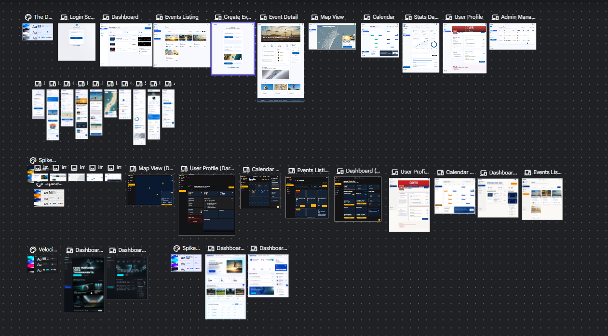
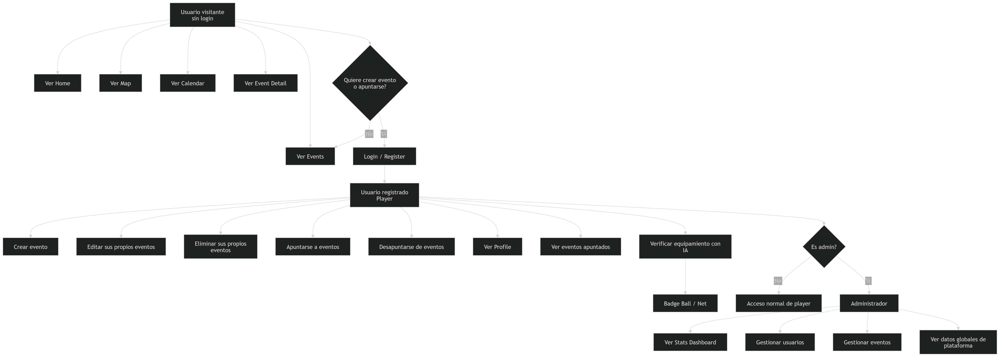

Plataforma para organizar partidos y torneos de vóley playa con mapa, calendario, perfiles, administración e inteligencia artificial.
01 · Contexto
Organizar partidos de vóley playa suele depender de grupos de WhatsApp, mensajes dispersos y poca información centralizada.
Una plataforma donde los jugadores pueden crear eventos, unirse, explorar ubicaciones y verificar equipamiento con IA.
Objetivos
02 · Organización
Ideas futuras, perfiles públicos, amigos, chat.
Rediseño, filtros, IA, mejoras responsive.
Implementación por fases y validación incremental.
Deploy, tests, dashboard, IA funcional.
Diseño
Antes de cerrar el rediseño final, exploré diferentes propuestas visuales para comparar layouts, estilos, navegación móvil y pantallas principales.

03 · Tecnologías
Arquitectura
El backend del proyecto está basado en Supabase: autenticación, base de datos y Edge Functions para lógica sensible.
Código
src/
├── app/
├── assets/
├── config/
├── features/
│ ├── auth/
│ ├── admin/
│ ├── calendar/
│ ├── events/
│ ├── home/
│ ├── map/
│ ├── profile/
│ ├── registrations/
│ └── stats/
├── layout/
├── routes/
├── shared/
│ └── components/
└── tests/
Roles
Puede explorar eventos, mapa, calendario y detalle de eventos.
Puede crear eventos, apuntarse, gestionar su perfil y verificar equipamiento.
Puede acceder a estadísticas, gestión de usuarios y gestión de eventos.
User flow
Antes de la demo, este diagrama resume qué puede hacer cada tipo de usuario dentro de la aplicación.

04 · Demo
Código relevante
La lógica de filtros se separó en un hook reutilizable para evitar duplicar código entre la vista de eventos y el mapa.
const {
filteredEvents,
filters,
locations,
updateFilter,
clearFilters,
} = useEventFilters(events);
Eventos + mapa
El array filtrado se utiliza para mostrar cards de eventos. Si el usuario cambia un filtro, se actualiza la lista visible.
El mismo array filtrado se envía al mapa. Si quedan tres eventos, el mapa muestra tres markers. Si no queda ninguno, no se muestran markers.
Esta decisión sigue el principio DRY: una sola lógica de filtro reutilizada en diferentes pantallas.
IA · Reto principal
La integración de IA fue uno de los mayores retos del proyecto, porque no consistía solo en llamar a una API: también había que proteger la API key, validar usuarios, controlar errores y guardar el resultado en el perfil.
Edge Functions
Código relevante
export async function verifyEquipmentImage(imageFile, target) {
if (!imageFile.type.startsWith("image/")) {
throw new Error("Only image files are allowed");
}
const base64 = await fileToBase64(imageFile);
const { data, error } = await supabase.functions.invoke(
"verify-equipment",
{
body: {
image: base64,
target,
},
}
);
if (error) throw error;
return data;
}
Código relevante
const { image, target } = await req.json();
const {
data: { user },
} = await supabaseClient.auth.getUser();
if (!user) {
return Response.json(
{ error: "Unauthorized" },
{ status: 401 }
);
}
const response = await fetch(GEMINI_URL, {
method: "POST",
body: JSON.stringify({
contents: [
{
parts: [prompt, imageData],
},
],
}),
});
Testing
npm run test
npm run test:coverage
Testing
Los servicios concentran operaciones importantes: crear eventos, apuntarse, calcular estadísticas, autenticar usuarios y verificar equipamiento.
Al depender de Supabase y APIs externas, los tests con mocks permiten validar respuestas correctas y errores sin depender de una base real.
La UI puede cambiar, pero los servicios deben seguir respetando el contrato: qué datos reciben, qué datos devuelven y cómo gestionan errores.
06 · Retos
El reto no era solo analizar una imagen, sino evitar exponer la API key de Gemini en el frontend. La solución fue usar una Supabase Edge Function.
Los servicios dependen de llamadas externas. Para poder testearlos de forma estable, utilicé mocks y centré los tests en la lógica de negocio.
El filtro debía funcionar tanto en la vista de eventos como en el mapa. Para evitar duplicar lógica, lo separé en un hook reutilizable.
Aprendizajes
He trabajado con arquitectura por features, Supabase Auth, servicios, hooks reutilizables, mapas, calendario, testing e integración con IA.
He aprendido a convertir una necesidad real en una aplicación completa: desde planificación, diseño y user flow hasta desarrollo, deploy y demo final.
Perfiles públicos, amigos, chat, equipos para torneos, recomendaciones inteligentes y comunidad real de jugadores.